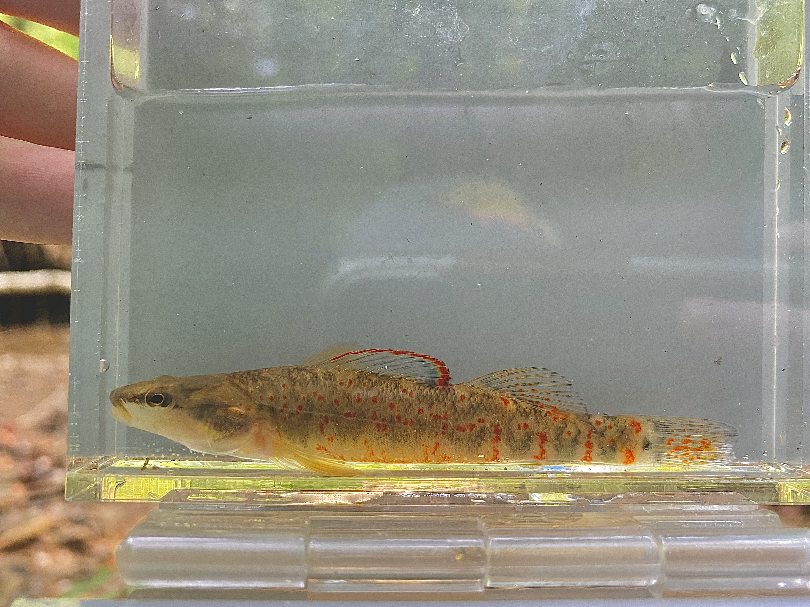

Past Research Experience
Austin Peay State University
August 2020-December 2023
 The Kentucky Arrow Darter (KAD), Etheostoma spilotum, is endemic to first and second order headwater streams in the Upper Kentucky River Basin. It is listed as threatened under the Endangered Species Act due to declines in occurrence and abundance, primarily due to extensive habitat degradation from mining activities, across its range. Blanton et al. 2019 (using samples from 2014), using mitochondrial and microsatellite markers, found populations of KAD maintained some level of gene flow across its range, historically (pre-human influence), while contemporary populations were genetically isolated and showed signatures of recent reduction in genetic diversity.
Our objectives were to use the same 11 microsatellite markers of Blanton et al. (2019) to assess the impacts of anthropogenic land use on population connectivity and genetic diversity in KAD and to describe any changes in genetic diversity metrics over the past 6 years.
To examine the current status of KAD, we performed a standard suite of population genetic analyses. We found that current KAD genetic diversity patterns are similar to those found in Blanton et al. (2019), where the species has low genetic diversity and high population isolation. These results indicate the species is at risk of the extinction vortex.
To evaluate the potential effects of anthropogenic land use on population connectivity, we performed isolation by resistance and distance models using genetic distance calculated from our eleven microsatellite loci and resistance mapping of multiple landscape variables. We created multiple resistance surfaces from landscape variables that are known to influence KAD occurrence, including elevation, presence of dams, stream order, and percent landcover (agriculture, urbanization, forest cover, and surface mining). We created a cumulative resistance surface from the individual surface layers to calculate cumulative resistance among populations using the R package gdistance; resistance values for each variable were assigned from the literature. Cumulative resistance was correlated with FST values using a linear mixed effects model in R package corMLPE. FST values indicated a high level of genetic fixation between KAD populations. Analysis of single and multi-surface resistance modeling showed that decreased forest cover is linked to high genetic differentiation, suggesting that land use practices leading to deforestation, such as surface mining, agriculture, and urbanization, contribute to genetic isolation of KAD populations.
Check out the original Blanton et al. (2019) paper, KAD species description (Thomas et al. 2023), and recently published KAD research (Watson et al. 2024)!
Influence of Fish Size in Stage-Structured Feeding
REU Internship, University of South Dakota
Vermillion, South Dakota
How do species coexist and affect their ecosystem? Traditionally, scientists studied this question by examining species interaction alone. However, stage-structured feeding can better predict predator-prey interactions within a food web by accounting for the variability in predation across life stages. For example, aquatic insects such as chironomid midges feed on the bottom of rivers and lakes as larvae, move through the water column as pupae, and emerge as flying terrestrial adults. However, while it is known that fish target specific life stages of these prey, it is not known whether this is related to fish size. Therefore, in this study we examined the relationship between fish size and proportion of non-larval insects.Preliminary results found a positive relationship between size and proportion of nonlarval insects in Bluegill (Lepomis macrochirus), Spotfin Shiner (Cyprinella spiloptera), and Johnny Darter (Etheostoma nigrum). The relationship between size and proportion of non-larval insects did not appear in all fish species.Data overall supported the hypothesis that fish size and proportion of non-larval insects is related,but it is variable among species.
Controlled Monitoring of Hydrilla in Lower Lake
Summer Honors Research 2018
Sweet Briar, Virginia
 Hydrilla verticillata is an invasive aquatic plant that poses a threat to freshwater ecosystems across the United States. The invasive species is known to rapidly infest lakes, causing potentially dangerous chemical changes in the ecosystem. Hydrilla blocks sunlight, thereby influencing the light penetration, heat distribution, and biological processes of the lake. By occupying a majority of the lake with thick foliage, native plant species are outcompeted by Hydrilla, which limits food resources for native wildlife. In order to reduce Hydrilla, 45 Ctenopharyngodon idella, commonly known as grass carp, were released into Lower Lake on Sweet Briar Campus in April 2018. In order to assess if the grass carp were influencing the Hydrilla, a manipulated experiment (NET) was set up to exclude the existing carp from a set area. The NET area was to act as the control in this experiment. Additionally, an experiment (OUT) was set up to properly eliminate and isolate variables in the project; the OUT area acted as the manipulated experiment. A suite of chemical indicators were tested within both the NET and OUT to compare the influence of Hydrilla on the aquatic chemistry of the lake. Preliminary findings demonstrated that in 2018, Hydrilla was less abundant than in 2016 and 2017 according to biomass data. Visual surveys revealed that Hydrilla was only present in the NET area of two of the five exclosures in the lake. pH was consistently higher in the NET side compared to the OUT side of exclosures. Compared to OUT, the NET area had significantly lower dissolved oxygen at the bottom of the lake when Hydrilla was present. Hydrilla also retained daytime heat, demonstrated by higher nighttime temperatures in the NET area of the exclosures. Hydrilla did not influence other chemical indicators, including nitrogen, phosphorus, light, and turbidity. Conductivity showed a relationship with Hydrilla growth, but not in a matter that was harmful to the ecosystem. Overall, preliminary visual surveys and sonar supported that Hydrilla has been diminished by the carp, eliminating the dangerous chemical changes caused by the invasive plant in the lake. Hydrilla is a nuisance to many freshwater ecosystems; however, findings confirm that releasing grass carp is an efficient method of biomangement for infested ecosystems.
Hydrilla verticillata is an invasive aquatic plant that poses a threat to freshwater ecosystems across the United States. The invasive species is known to rapidly infest lakes, causing potentially dangerous chemical changes in the ecosystem. Hydrilla blocks sunlight, thereby influencing the light penetration, heat distribution, and biological processes of the lake. By occupying a majority of the lake with thick foliage, native plant species are outcompeted by Hydrilla, which limits food resources for native wildlife. In order to reduce Hydrilla, 45 Ctenopharyngodon idella, commonly known as grass carp, were released into Lower Lake on Sweet Briar Campus in April 2018. In order to assess if the grass carp were influencing the Hydrilla, a manipulated experiment (NET) was set up to exclude the existing carp from a set area. The NET area was to act as the control in this experiment. Additionally, an experiment (OUT) was set up to properly eliminate and isolate variables in the project; the OUT area acted as the manipulated experiment. A suite of chemical indicators were tested within both the NET and OUT to compare the influence of Hydrilla on the aquatic chemistry of the lake. Preliminary findings demonstrated that in 2018, Hydrilla was less abundant than in 2016 and 2017 according to biomass data. Visual surveys revealed that Hydrilla was only present in the NET area of two of the five exclosures in the lake. pH was consistently higher in the NET side compared to the OUT side of exclosures. Compared to OUT, the NET area had significantly lower dissolved oxygen at the bottom of the lake when Hydrilla was present. Hydrilla also retained daytime heat, demonstrated by higher nighttime temperatures in the NET area of the exclosures. Hydrilla did not influence other chemical indicators, including nitrogen, phosphorus, light, and turbidity. Conductivity showed a relationship with Hydrilla growth, but not in a matter that was harmful to the ecosystem. Overall, preliminary visual surveys and sonar supported that Hydrilla has been diminished by the carp, eliminating the dangerous chemical changes caused by the invasive plant in the lake. Hydrilla is a nuisance to many freshwater ecosystems; however, findings confirm that releasing grass carp is an efficient method of biomangement for infested ecosystems.
“The more clearly we can focus our attention on the wonders and realities of the universe about us, the less taste we shall have for destruction.”